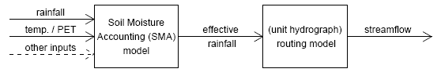

introduction
hydromad is an R package (i.e. a software package for the R statistical computing environment). It provides a modelling framework for environmental hydrology: water balance accounting and flow routing in spatially aggregated catchments. It supports simulation, estimation, assessment and visualisation of flow response to time series of rainfall and other drivers.
A minimal unit hydrograph framework is used, where areal rainfall is passed through a soil moisture accounting (SMA) model to estimate effective rainfall; this is then passed through a routing model to estimate streamflow. Included are several implementations of models consistent with this framework, notably the IHACRES CWI and CMD soil moisture accounting models, and unit hydrograph transfer functions for the routing.

This site serves as a reference for the R functions and datasets in the package. A gentler introduction can be found in the vignette hydromad tutorial and the paper An open software environment for hydrological model assessment and development (both included in the package). You can also look at the source code for the paper.
The package is maintained by Joseph Guillaume. The modelling approach is based on work by Tony Jakeman and Barry Croke at The Australian National University.
For more information, see
- installation instructions
- hydromad users group (questions and discussion).
- hydromad github repository (source code and bugs)
installation
The hydromad package is currently not available from CRAN. Eventually it should be on CRAN but there are unresolved issues of incomplete documentation and references to the unreleased dream package.
The steps required for installation are:
- Install R if you do not have a recent version (the most recent release is recommended).
- Install required packages from within R:
install.packages(c("zoo", "latticeExtra", "polynom", "car", "Hmisc")) -
- For Windows:
- Download the Windows binary package from the downloads page and choose "Install package from local zip file" under the Packages menu.
- Otherwise, e.g. GNU/Linux:
- Download the source
package from the downloads page and and run
R CMD INSTALL hydromad_0.9-10.tar.gz. You will need a C compiler, but the vignettes are pre-built as PDFs.
- Optionally install other packages required for certain functions:
install.packages("DEoptim")
install.packages("dream", repos = "http://r-forge.r-project.org")
Once it is installed, get started with
library(package = "hydromad")
help("hydromad")
Please direct questions and discussion to the hydromad users group.